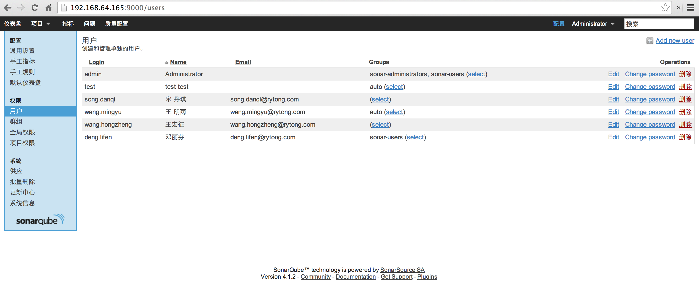

- Introduction
- 1. 代码提交
- 2. 编码规范
- 3. 代码评审
- 4. 持续集成
- 5. 代码服务器
- 6. 技术期刊
- 7. 需求文档
-
8.
设计文档
- 8.1. 文件上传
- 8.2. 离线资源
- 8.3. 可靠消息
- 8.4. Editor调试工具
- 8.5. EMP设计
- 8.6. EWP设计
- 9. 测试文档
- 10. 客户端其他功能
- 11. 技术积累
- Published using GitBook
Sonarqube document
1 Sonar 概述
- Sonar 是一个用于代码质量管理的开放平台。通过插件机制，Sonar 可以集成不同的测试工具，代码分析工具，以及持续集成工具。
- 与持续集成工具（例如 Hudson/Jenkins 等）不同，Sonar 并不是简单地把不同的代码检查工具结果（例如 FindBugs，PMD 等）直接显示在 Web 页面上，而是通过不同的插件对这些结果进行再加工处理，通过量化的方式度量代码质量的变化，从而可以方便地对不同规模和种类的工程进行代码质量管理。
- 在对其他工具的支持方面，Sonar 不仅提供了对 IDE 的支持，可以在 Eclipse 和 IntelliJ IDEA 这些工具里联机查看结果；同时 Sonar 还对大量的持续集成工具提供了接口支持，可以很方便地在持续集成中使用 Sonar。
- 此外，Sonar 的插件还可以对 Java 以外的其他编程语言提供支持，对国际化以及报告文档化也有良好的支持。
2 sonar组成部分
- 一个存储配置和代码质量分析结果的数据库。
- 一个web server 显示分析结果和进行配置。
- 一个运行计算项目数据的源代码分析器客户端。
3 安装配置
前置条件java和mysql环境
3.1 Linux 平台配置
- 下载Sonar，解压至需要安装的目录
创建数据库：
- 安装mysql
yum install mysql - 创建一个sonar用户
- 建一个数据库,sonar会在第一次启动的时候自动创建表和索引
CREATE DATABASE sonar CHARACTER SET utf8 COLLATE utf8_general_ci; CREATE USER 'sonar' IDENTIFIED BY '< password you picked>'; GRANT ALL ON sonar.* TO 'sonar'@'%' IDENTIFIED BY '<password you picked>'; GRANT ALL ON sonar.* TO 'sonar'@'localhost' IDENTIFIED BY '<password youpicked>'; FLUSH PRIVILEGES;如果每一行命令都输出Query OK, 0 rows affected (0.00 sec)表示操作成功。
修改解压目录下的conf/sonar.properties配置数据库的访问,sonar提供了所有支持的数据库的配置模板，只需去掉所需的数据库前的注释，注释掉H2数据库.
# Comment the following line to deactivate the default embedded database. #sonar.jdbc.url: jdbc:h2:tcp://localhost:9092/sonar #----- MySQL 5.x/6.x # Comment the embedded database and uncomment the following line to use MySQL jdbc:mysql://localhost:3306/sonar?useUnicode=true&characterEncoding= utf8&rewriteBatchedStatements=true
- 安装mysql
安装sonar-runner
- 下载sonar-runner,解压到需要安装的目录下
- 修改${SONAR_RUNNER_HOME}/conf/sonar-runner.properties文件，打开database connection, server URL的注释
- 配置环境变量，添加SONAR_HOME、SONAR_RUNNER_HOME环境变量，并将SONAR_RUNNER_HOME加入PATH
- 命令行执行
sonar-runner -h如显示如下内容,则安装成功：INFO: INFO: usage: sonar-runner [options] INFO: INFO: Options: INFO: -D,--define <arg> Define property INFO: -e,--errors Produce execution error messages INFO: -h,--help Display help information INFO: -v,--version Display version information INFO: -X,--debug Produce execution debug output
- 启动sonar服务器
默认的端口是9000，可以在conf/sonar.properties中修改,执行命令/sonar.sh start启动服务。注意：在linux系统下，如果进入了目录.../sonarqube/bin/[OS]/且sonar.sh不能运行，请输入./sonar.sh console
- 打开 http://localhost:9000 ，如果显示sonar主页，则sonar安装成功.
3.2 Mac 平台配置
- mac安装时可通过brew工具安装sonar、sonar-runner和mysql
brew install mysql brew install sonar brew install sonar-runner - 除过不需要配置环境变量，其他步骤同Linux平台配置
3.3 Windows 平台配置
- 下载最新的sonar，解压到目录D:\sonar\sonar-3.6.2
- 数据库配置请参考Linux平台配置
- 安装sonar-runner
- 安装sonar-runner分为两种方式：
- 方式一：下载sonar-runner,解压到需要安装的目录下
- 方式二：配置jenkins, 由jenkins自动安装sonar-runner
如果有多台client，推荐采用这种方案。 打开 http://192.168.64.253:8080/jenkins/configure 配置如下:
- 修改C:\sonar\sonar-runner-2.3\conf\sonar-runner.properties:
sonar.jdbc.url=jdbc:mysql:thin:@localhost:1521/orcl sonar.jdbc.username=sonar sonar.jdbc.password=sonar sonar.sourceEncoding=UTF-8 sonar.login=admin sonar.password=admin - 添加系统环境变量：SONAR_RUNNER_HOME 值为 C:\sonar\sonar-runner-2.3
- 修改环境变量Path,在变量值末尾添加：“;%SONAR_RUNNER_HOME%\bin”
- 命令行里执行 sonar-runner -h 如果显示如下内容,则安装成功。
INFO: INFO: usage: sonar-runner [options] INFO: INFO: Options: INFO: -D,--define Define property INFO: -e,--errors Produce execution error messages INFO: -h,--help Display help information INFO: -v,--version Display version information INFO: -X,--debug Produce execution debug output
- 安装sonar-runner分为两种方式：
- 执行D:\sonar\sonar-3.6.2\bin\windows-x86-32\StartSonar.bat,启动自带的JETTY服务器。
- 打开http://localhost:9000， 如果显示sonar主页，则sonar安装成功.
4 sonarqube 用户管理
4.1 用户管理
- 使用管理员用户登录http://192.168.64.165:9000/
- 在配置》权限页面对用户进行增删改查 
4.2 集成ldap
修改 SONARQUBE_HOME/conf/sonar.properties
# LDAP configuration
# General Configuration
sonar.security.realm=LDAP
sonar.security.savePassword=true
ldap.url=ldap://192.168.64.210
# User Configuration
ldap.user.baseDn=dc=rytong,dc=com
ldap.user.request=(&(objectClass=inetOrgPerson)(uid={login}))
ldap.user.realNameAttribute=cn
ldap.user.emailAttribute=mail
# Group Configuration
ldap.group.baseDn=dc=rytong,dc=com
ldap.group.request=(&(objectClass=posixGroup)(memberUid={uid}))
5 SonarQube的插件
- 本地化插件：将网页转为中文。
通过update center(更新中心)直接安装或者将插件下载后解压到/extensions/plugins下。 重启sonar后插件生效。 - java eoosystem包括
- Android Plugin
在java的基础上增加了对android代码的一些其他规范
需要条件：Android SDK需要预先安装，且环境变量中配置了android的home路径。 - Checkstyle Plugin
用Checkstyle进行代码分析。 - FindBugs Plugin
用FindBugs进行代码分析。 - PMD Plugin
用PMD进行代码分析。 - Sonargraph Plugin
以sonargraph定义的结构体系为标准来检测代码的一致性。高度耦合会导致结构的不合理。
- Android Plugin
- SCM Activity Plugin and SCM Stats Plugin
SCM Stats Plugin需要SCM Activity Plugin的支持
SCM Stats Plugin与版本控制工具关联。可以看到不同用户的代码贡献。
- Jenkins Plugin
Install the SonarQube Jenkins plugin via the Jenkins Update Center.
需要在jenkins（1.491+）端配置 https://wiki.jenkins-ci.org/display/JENKINS/SonarQube+plugin - Useless Code Tracker Plugin
检测无用代码的插件。
6 Jenkins集成SonarQube
下面以android项目为例
在项目的根目录编辑sonar-project.properties文件
# Required metadata sonar.projectKey=android_rebuild sonar.projectName=android_rebuild sonar.projectVersion=5.2 # Comma-separated paths to directories with sources (required) sonar.sources=src, EMP/src, EMP/OfficeReader/src, EMP/QRCode/src, EMP/RYTTrack/src, ViewServer/src # needed for findbugs analysis, the paths here should match the paths above sonar.binaries=target/classes, EMP/target/classes, ViewServer/target/classes # path to test source directories (optional) #sonar.tests=$COMMONS_LANG/src sonar.language=java # Encoding of the source files sonar.sourceEncoding=UTF-8- 在jenkins的插件管理中选择安装，sonar jenkins plugin. 然后进入jenkins的系统配置页面，配置sonar安装信息
- 创建一个android sonar的jenkins project（参见jenkins文档）
- 在project中添加sonar触发

- sonar触发选项中选择sonar-project.properties文件，图中红色是因为没有在jenkins中配置一个统一的sonar-runner。
保存jenkins project,点击立即构建，构建完成后日志显示为
00:19:59.075 INFO - ANALYSIS SUCCESSFUL, you can browse http://localhost:9000/dashboard/index/android_rebuild 00:19:59.095 INFO - Executing post-job class org.sonar.plugins.core.issue.notification.SendIssueNotificationsPostJob 00:19:59.116 INFO - Executing post-job class org.sonar.plugins.core.batch.IndexProjectPostJob 00:19:59.143 INFO - Executing post-job class org.sonar.plugins.dbcleaner.ProjectPurgePostJob 00:19:59.155 INFO - -> Keep one snapshot per day between 2014-06-30 and 2014-07-27 00:19:59.156 INFO - -> Keep one snapshot per week between 2013-07-29 and 2014-06-30 00:19:59.156 INFO - -> Keep one snapshot per month between 2009-08-03 and 2013-07-29 00:19:59.157 INFO - -> Delete data prior to: 2009-08-03 00:19:59.159 INFO - -> Clean android_rebuild [id=1] 00:19:59.162 INFO - <- Clean snapshot 121758 00:19:59.912 INFO - Executing post-job class org.sonar.plugins.buildbreaker.AlertBreaker 00:19:59.913 INFO - Executing post-job class org.sonar.plugins.buildbreaker.ForbiddenConfigurationBreaker INFO: ------------------------------------------------------------------------ INFO: EXECUTION SUCCESS INFO: ------------------------------------------------------------------------ Total time: 1:35.055s Final Memory: 28M/872M INFO: ------------------------------------------------------------------------ Finished: SUCCESS- 查看http://192.168.64.165:9000/ sonar主页面，点击android_rebuild项目分析结果